ANGKATAN 15
 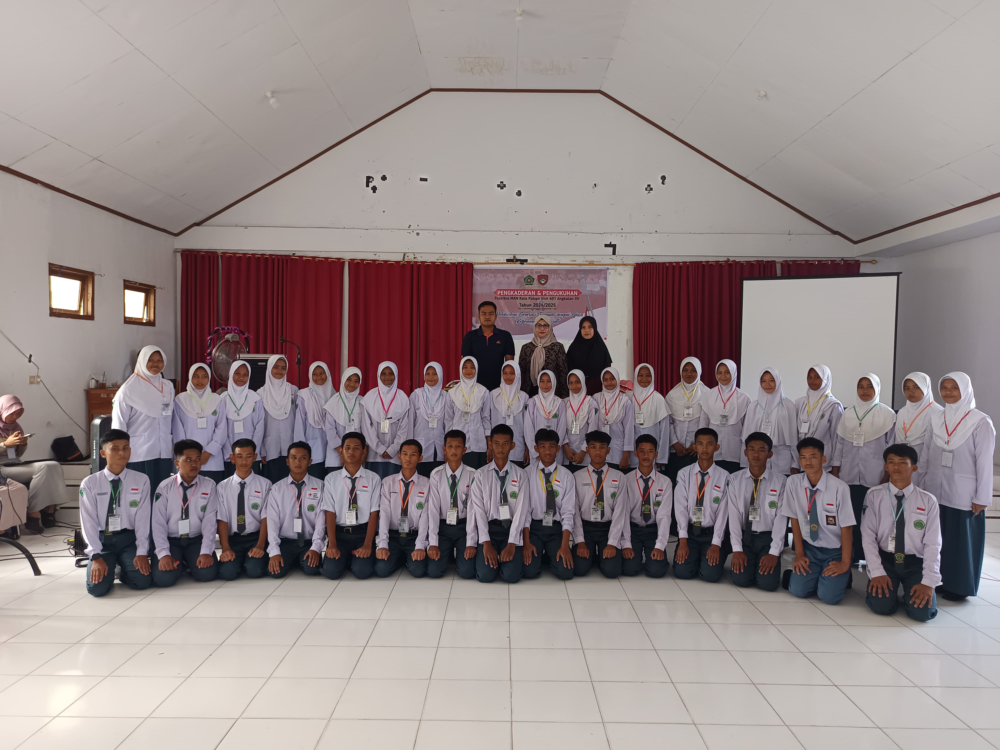
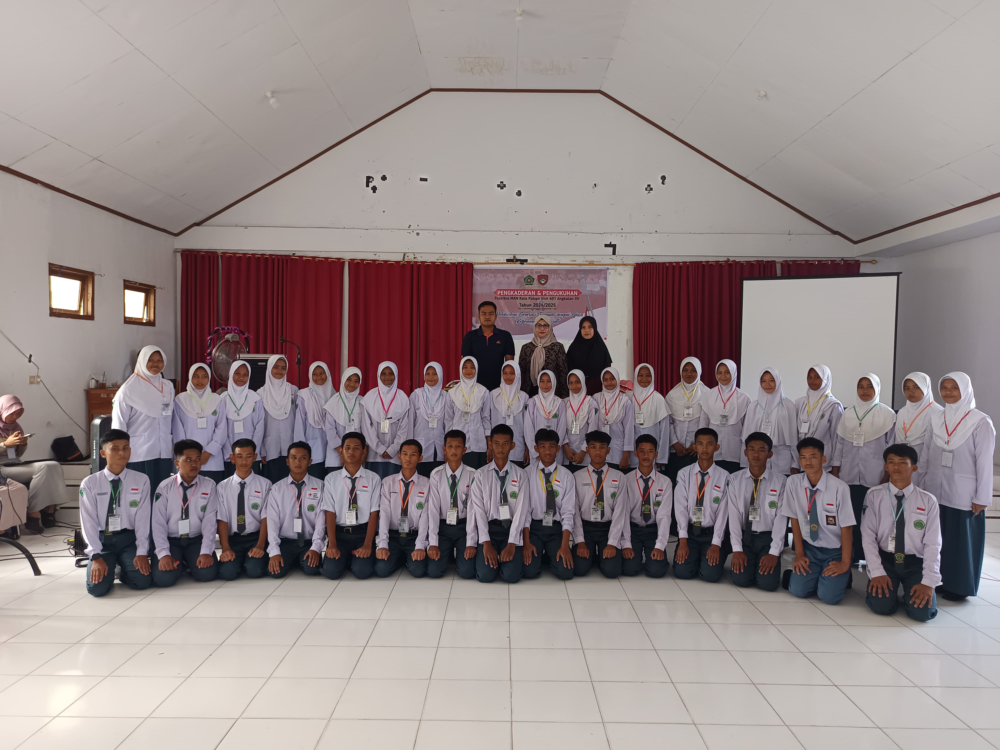
 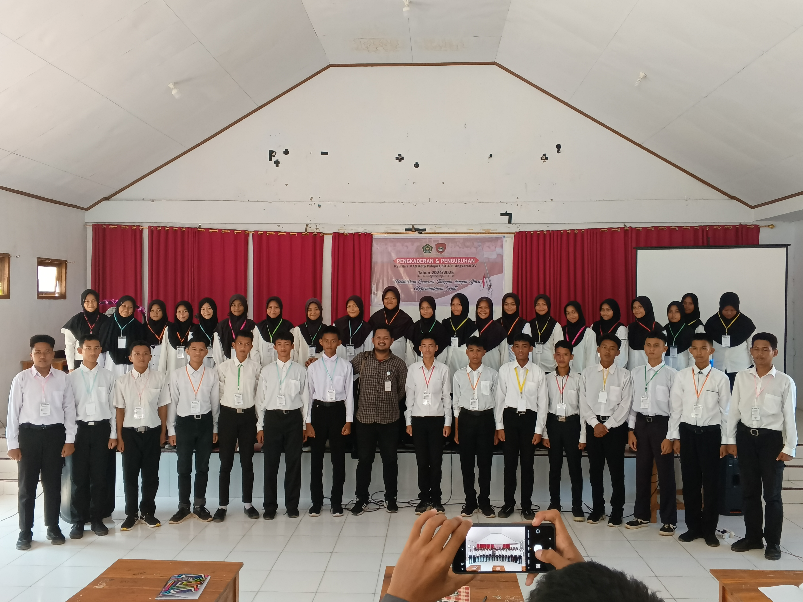
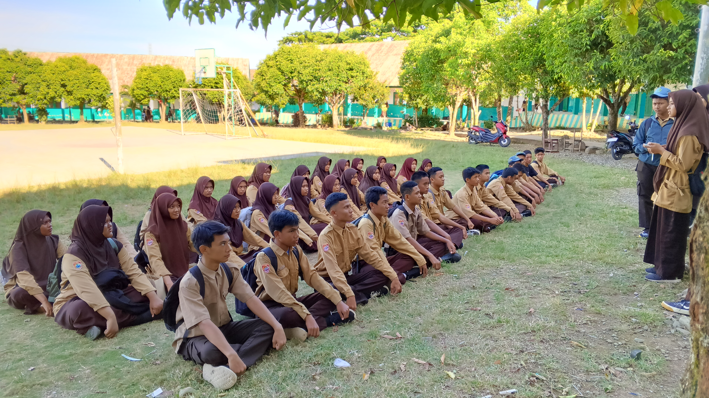
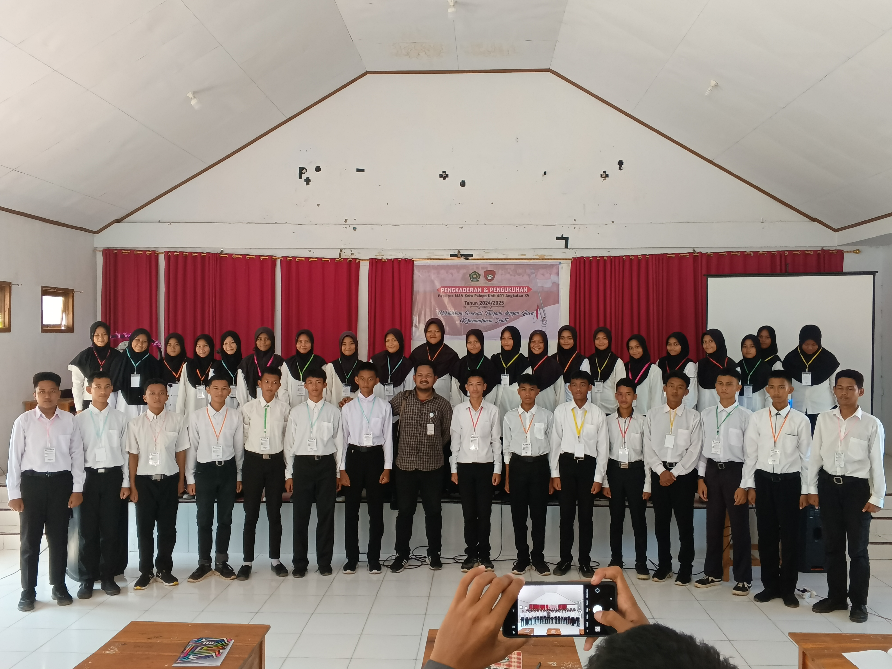
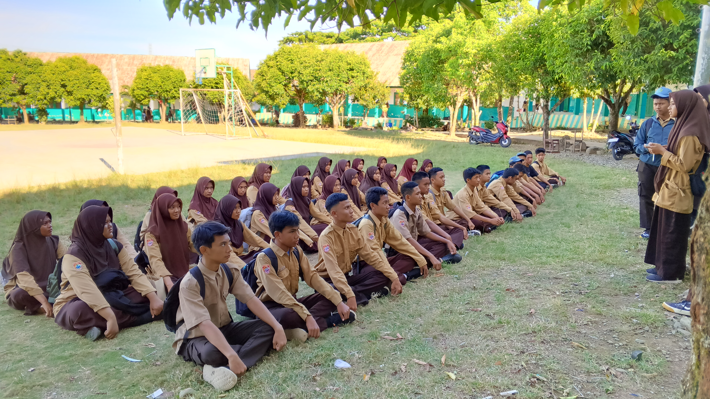
Ini adalah tempat untuk menyimpan kenangan indah Paskibra MAN Palopo.
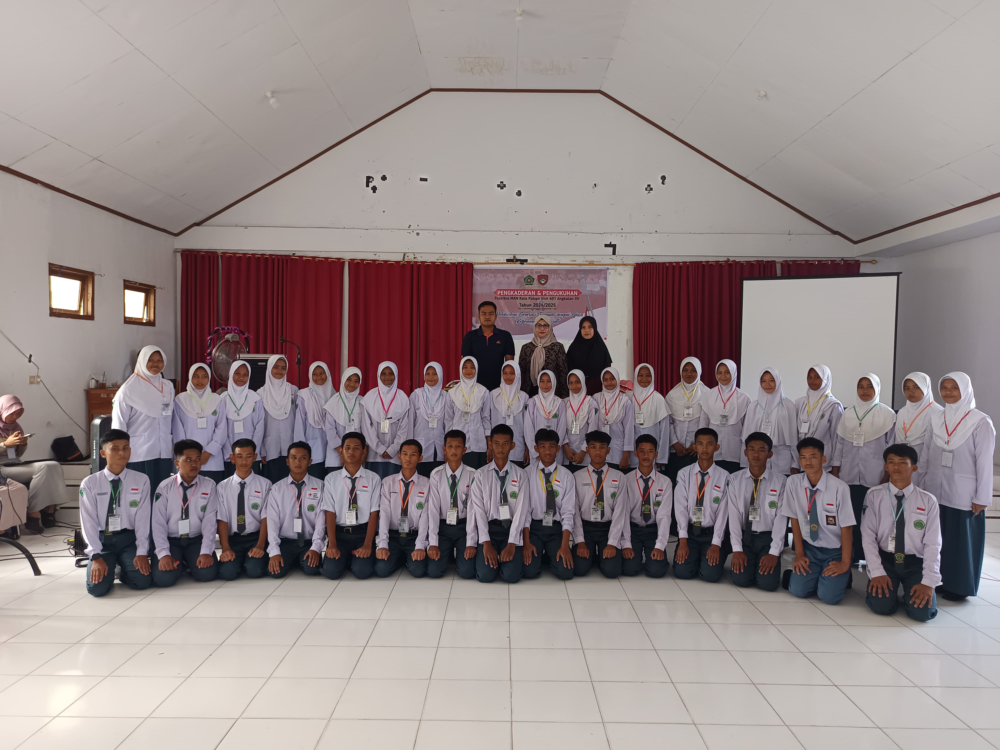
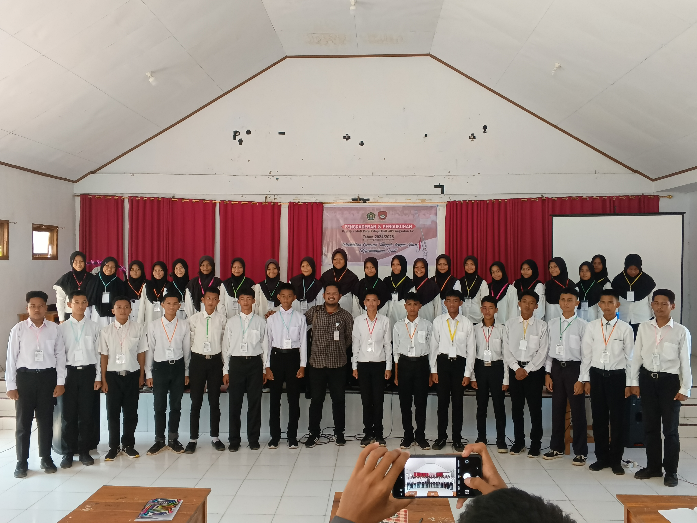
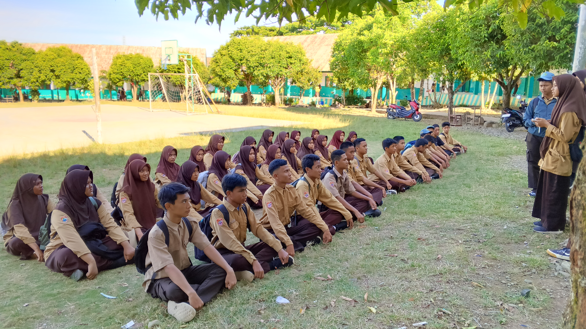
 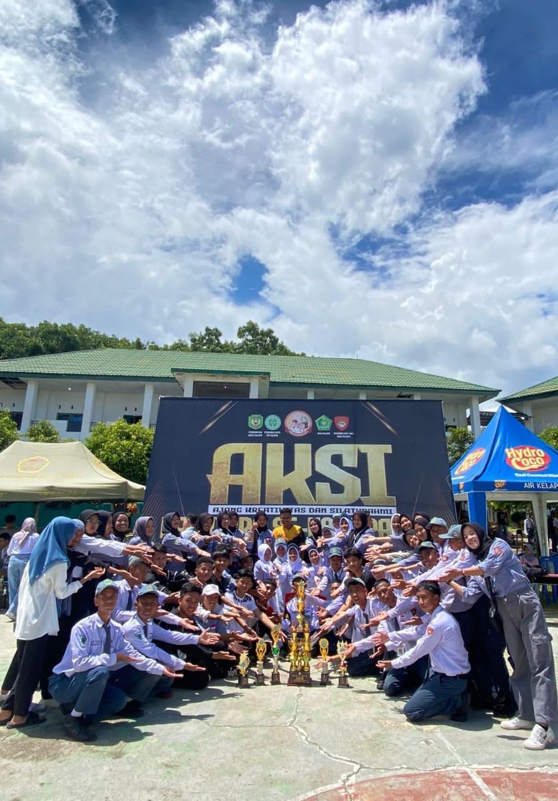
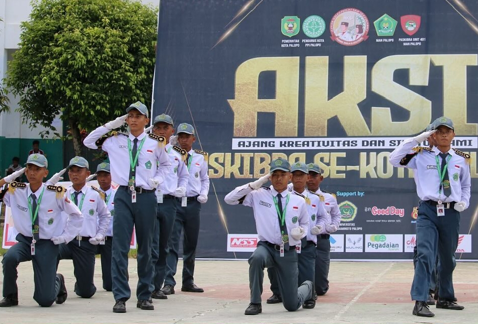
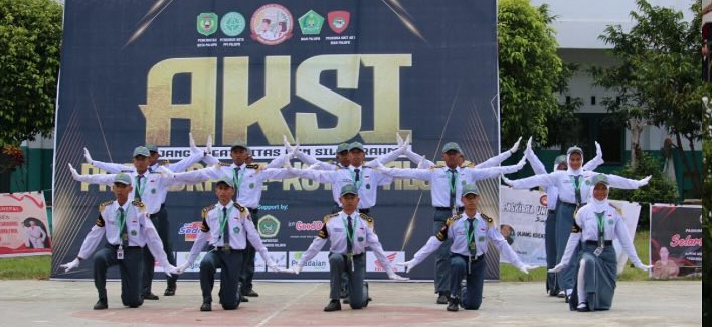
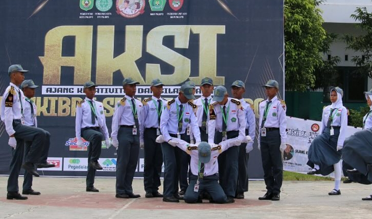
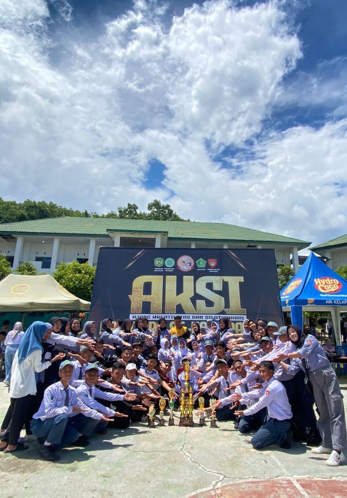
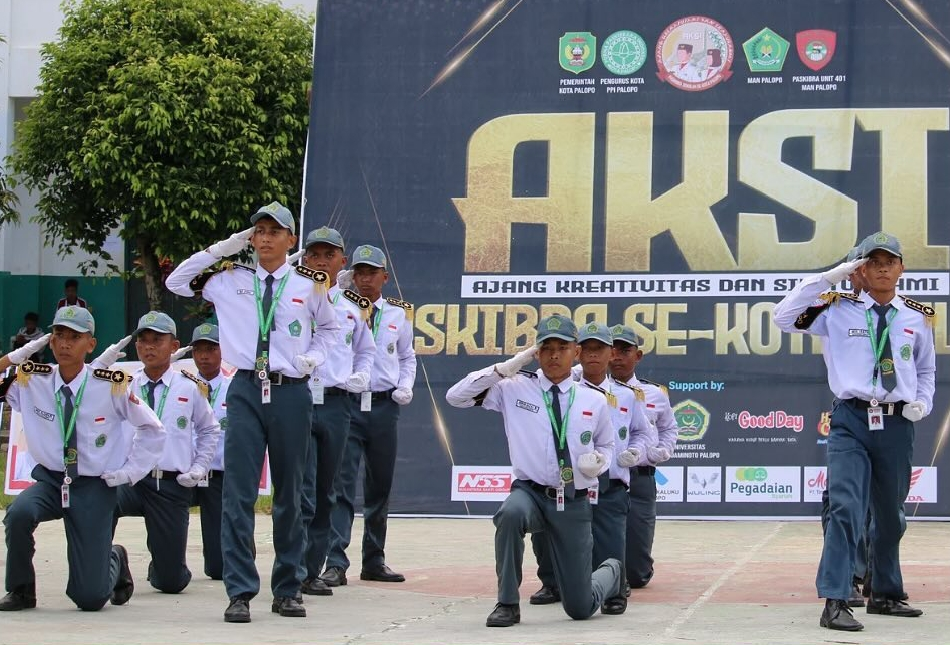
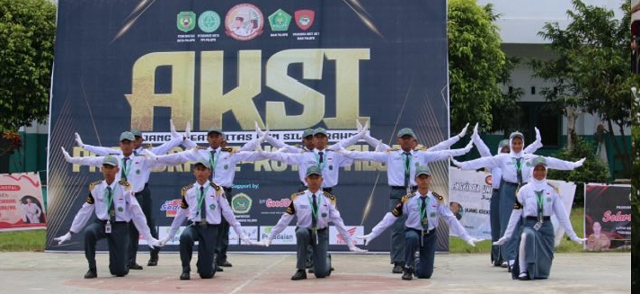
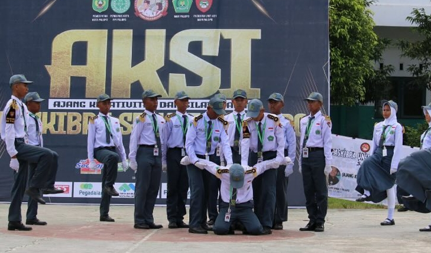
Paskibra MAN Palopo yang lebih panjang: Paskibra MAN Palopo adalah salah satu organisasi siswa yang memiliki peran penting dalam membangun karakter generasi muda yang berjiwa nasionalis, disiplin, dan berintegritas. Sebagai wadah pengembangan keterampilan baris-berbaris dan kepemimpinan, Paskibra MAN Palopo bertujuan untuk menciptakan generasi yang tangguh dan berdedikasi, siap mengemban tanggung jawab sebagai pengibar bendera dalam setiap upacara, baik di tingkat sekolah maupun pada kegiatan-kegiatan resmi lainnya. Dalam menjalankan tugasnya, Paskibra MAN Palopo tidak hanya melatih kemampuan teknis, seperti keterampilan baris-berbaris, tetapi juga menanamkan nilai-nilai kebangsaan dan kerja sama. Anggota Paskibra MAN Palopo diberikan pembinaan yang terstruktur dan berkelanjutan, meliputi latihan fisik, pembinaan mental, serta penanaman sikap kepemimpinan yang kuat. Selain itu, organisasi ini mengadakan berbagai kegiatan seperti pelatihan rutin, lomba-lomba paskibra, dan kegiatan sosial yang bertujuan memperkuat rasa kekeluargaan di antara anggota. Di setiap latihan, anggota didorong untuk bekerja sama dalam tim, saling menghargai, dan mendukung satu sama lain, sehingga tercipta ikatan solidaritas yang kuat. Keberadaan Paskibra MAN Palopo juga menjadi inspirasi bagi siswa lain untuk lebih mencintai tanah air serta menghargai simbol-simbol kebangsaan. Melalui pengalaman menjadi anggota Paskibra, siswa tidak hanya belajar tentang kedisiplinan dan keteraturan, tetapi juga menjadi pribadi yang memiliki rasa tanggung jawab tinggi, siap menjadi pemimpin, serta mampu memberikan teladan positif bagi lingkungan sekolah. Dengan demikian, Paskibra MAN Palopo berperan dalam mencetak generasi muda yang berkualitas, unggul dalam prestasi, dan siap mengabdikan diri bagi bangsa dan negara..